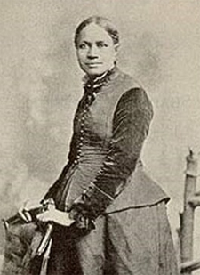
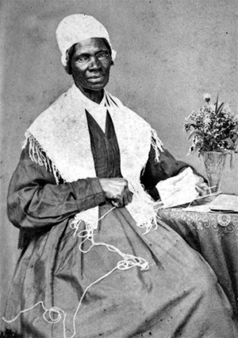

|
Freedom held important advantages for African-American women. Although almost
all of them worked for wages in service employment and remained socially and
economically vulnerable, most were able to establish a rich and secure family
and community life scarcely possible in bondage.
By the turn of the nineteenth century, slavery was rapidly becoming an
exclusively southern institution. Conditions of climate and soil ensured that
most regions of the North would never support the plantation agriculture most
conducive to large slaveholdings. Thus, the economic power of northern
slaveholders was not sufficient to cushion them from antislavery attack.
Starting with Vermont in 1777 all northern states abolished slavery either
outright or through plans of gradual emancipation. Within two generations only
1,100 slaves remained in a northern population of over 170,000 black Americans.
On the eve of the Civil War the number of northern slaves had dropped to
eighteen.
African-American women accounted for slightly more than half of all free black
people during this period but they were not evenly distributed throughout the
black population. In front er areas of the West, like California, there were
many more black men than women, but in the northeastern and north central
regions, black women held a numeric advantage, especially in urban areas.
Northern black women, who in slavery lived on farms or in small settlements,
used their new freedom of mobility to migrate to the larger cities. Jobs were
more readily available there and substantial numbers of black people settled
into emerging African-American urban communities.
The work lives of most African-American women did not change appreciably in
freedom. They remained full-time domestic workers in white households. In
nineteenth-century Philadelphia, New York, and Boston, two-thirds of black women
were service workers. Yet the general work title "servant" often obscured the
variety of jobs that these women did. The largest group performed traditional
household work, cleaning, washing, and cooking. Many provided child care for
white families and a few performed more specialized services like dressmaking
and gourmet cooking. The nature of work often depended upon the social and
economic status of the employer and carried with it significant social and
economic meaning for the worker. To work in the home of a family of power was to
have potential access to influence. Such a position might make a woman important
to her friends and neighbors.
|

Some African-American women did achieve middle
class status. Among them was teacher and author Frances Ellen
Watkins Harper.
|
The establishment of black institutions also provided work opportunities for
women. Early African-American schools founded in many cities were staffed by
white reformers. Elie Neau, a white New Yorker, founded the first slave school
in British North America in New York at the Trinity Church in 1704. Other
schools were established by Puritans in New England and by Quakers in
Philadelphia and other towns in Pennsylvania and New Jersey. From the beginning,
however, black women played important roles as classroom aids in some of the
early schools and as teachers in many of the later ones. Eleanor Harris was the
first teacher of her race in Philadelphia, and Sarah Dorsey and Margaretta
Forten were among those who followed in her footsteps. In the early 1830s, Sarah
Mapps Douglass returned from New York City, where she had been a teacher, to
open a school for black girls in her native Philadelphia. Hers was, at the time,
the only high school for black girls in the nation. Douglass took the bold step
of teaching science to her female students and later, after taking courses in
medicine at the Female Medical College of Pennsylvania and at Pennsylvania
Medical University, she traveled widely lecturing to black women.
Throughout the North in the early decades of the nineteenth century, black women
provided and even supervised the education of black girls and, less frequency,
black boys as well. These were far more desirable jobs than domestic service,
but they were few and required education far beyond the reach of most free black
women of the period. Thus they remained the province of the small black middle
class chat developed during this era.
For most, domestic work was one of the only respectable jobs available, but
black women were vulnerable to sexual harassment at the hands of male employers
who held considerable power over them. In some areas, periodic shortages of
domestic workers provided leverage to black women in their dealings with white
male employers, but in most cases these women were financially imperiled and
largely unprotected by law.
For black women unable to secure a living through more respectable employment,
prostitution remained a job of last resort. In New York's Five Points districts,
along Philadelphia's Delaware waterfront, or in Boston's North End, desperate
women, black and white, found men willing to compensate them for sexual favors.
Whatever work black women undertook, it was sure to affect ocher aspects of
their lives. No less clan ocher women in the nineteenth century they were
influenced by the societal expectations of gender roles. American women were
instructed through their families, churches, schools, and popular culture to
assume dependent, subordinate, supportive postures in their society. Theirs was
the domain of the home, the responsibility of the moral maintenance of the
family, and the role of helpmate to their husbands. These ideals were
contradictory to the realities of all poor women's lives but they were
especially so for black women, many of whom were poor and all of whom were
limited by the restrictions of a society that circumscribed opportunities
according to race.
The issue of race complicated the issue of gender in the lives of
African-American women. Because slavery was no respecter of gender, female
slaves were protected by neither traditional Western assumptions about feminine
frailty, nor presumptions about their emotional delicacy. When heavy fieldwork
was required and black males were not available in sufficient numbers to perform
such labor, female slaves were field hands. Moreover, the obedience, humility,
and dependency demanded of male slaves deprived black men of the traditional
privileges accorded men in American society. They were expected to exhibit "male
qualities" of physical strength and "female qualities" of subordination, not
only to their masters but also to all white people.
If slavery sought to defeminize black women and emasculate black men, most
believed that freedom should reestablish traditional gender roles. As free black
communities took form in the early nineteenth century, this message appeared in
the sermons of black ministers, in the expectations of family life, and even in
the pages of black newspapers. The socializing agencies of black society
instructed black women and men in the gender expectations of America.
The economic realities of black life frustrated all African-Americans but posed
special problems for black women. Forced to work long hours at inadequately
compensated employment, women also were expected to fulfill the duties of wife
and mother for their own families. Society implicitly recognized the full-time
nature of housework and child care in its expectation that such work might be
done by domestic staff, yet women were expected to perform such tasks in
addition to their full-time compensated employment. Such expectations burdened
pot only black women but also all working-class women. In the nineteenth
century, however, most married white women did not work full t me outside their
homes, and traditionally white women moved out of the work force after marriage.
Racial discrimination limited job and income possibilities for black males so
chat black women were likely to remain employed after marriage. Thus they faced
the double burden of work inside and outside of the household. Still, their
situation was even more complex.
There were some white women who also worked long hours at poorly compensated
employment and they, like their black counterparts, generally faced an
additional work burden at home. There was, however, one important difference.
Whereas white women might be expected to do double duty because of gender
expectations, black women were charged with such duty as part of their special
responsibility to their race. If black men were to be true men by predominating
in the family, black women must be true women by subordinating themselves to
their husbands' will and wishes. Such beliefs put women in particularly
difficult situations, as in the case of Chloe Spears who, with her husband,
Cesar, operated a boardinghouse in nineteenth-century Boston. In addition, Chloe
did domestic work for a prominent Boston family. During the day, while she was
at work, Cesar saw to the cooking and other dudes associated with the
boardinghouse. When Chloe returned in the evening, he retired and turned the
operation over to her while he rested. At this point, what had been seen as work
during the day became housework at night, fit not for the man of the house, but
for the housewife.
Thus, after working all day at her day job, Chloe cooked dinner for her family
and the boarders and cleaned the house. Then, in order to make extra money she
took in washing, another job fit for women, which she did at night, setting up
lines in her room for drying the clothes. She slept a few hours while the
clothes dried, then ironed them, and prepared breakfast for the household before
going off to work for the day.
It was important that Cesar not be expected to participate in the housework, for
that was not man's work, and both Cesar and Chloe had an obligation to uphold
every black man's manhood as a part of their duty to the freedom and manhood of
the race, a duty reinforced by the teachings of almost every authority in black
society. This was one of the ways that race complicated black life. Yet, in some
ways black women benefited from their critical economic roles in black society.
Despite the custom and law in American society that husbands controlled the
family finances, Chloe did not routinely place her wages under Cesar's
management. Instead, she controlled her own money and, when at one point she
decided to acquire an unfurnished house, Cesar was surprised that she had the
$700 needed for the purchase. In fact, the only reason he became involved in the
acquisition was the law that would not allow a married woman to buy a house in
her name. Chloe's independence in financial matters was limited not by the
customs or admonitions of black society but by laws that limited all women in
American society.
|

Sojourner Truth
|
This independence extended to many areas of life, giving black women certain
advantages within their communities not provided to women in the broader
American society. Whereas white women, in theory at least, were restricted to
the private sphere of home and children, black women were allowed, even
expected, to take part in the public arena of community politics. Not only did
they organize their own gender-separate organizations, as did white women, but
also they joined with black men to work for the common political and social
goals of the abolition of slavery and the improvement of the conditions of life
for free black Americans. Whether in the cause of education, temperance,
community service, civil rights, antislavery, or the Underground Railroad, black
women were central actors.
Mary Ann Shadd Cary of Philadelphia and later of Canada, Sojourner Truth of New
York State, Maria Stewart of Boston, and Ellen Craft who escaped from slavery in
Georgia were among the many black women who, with the full support of black men,
traveled the nation speaking out against slavery and in favor of racial justice.
These and other black women, like Sarah Remond of Boston, also journeyed to
Europe in the cause of freedom to be received by the royalty of the Old World.
Theirs was not the retiring role of the traditional nineteenth-century female
ideal. In the female antislavery societies, the less formal vigilance groups
that sheltered and defended fugitive slaves, and the literary societies that
placed the issues of freedom and justice before the public for discussion and
debate, black women were among the leaders.
Yet these women paid a price for this expanded role. Although they traveled the
globe as cosmopolitan representatives of their race, they were nevertheless
expected to perform the housewife's duties in addition to those of the public
figure. For black women, any service they provided to the community was service
in addition to that they provided to their families-it was a second job. To the
extent that they took on full-time responsibilities in the public sphere, it was
with the assistance of other black women. Mary Ann Shadd Cary's sister assisted
with the care of Cary's children while she was on the road speaking for
antislavery. Ellen Craft had no children for whom she was responsible while she
worked for the cause. Zilpha Elaw, an itinerant minister, relied on relatives to
care for her daughter in her absence. Whereas black men like Frederick Douglass,
William Wells Brown, and Charles Lenox Remond could rely on their wives to
shoulder the day-to-day responsibilities of family while they tended to their
careers in the protest movement, female reformers relied on surrogate wives,
most often female relatives.
The domestic expectations of married women sometimes encouraged black women to
postpone marriage, allowing time to establish public careers first. Sarah Mapps
Douglass remained single until well into middle age. Some black women refused to
marry because they found few black men capable of supporting them. One
consequence of the limited occupational opportunities for black men was the
disproportionate number of single black females and female-headed black
families, ranging as high as one-third of free black families in the antebellum
North. Yet this situation, like most others for African-Americans at the time,
was more complex than its surface appearance. One important reason for the
absence of black men from black families was their high death rate, brought
about by the dangerous jobs that they were often forced to take and the high
mortality rate among poor people generally in U.S. society.
Furthermore, the jobs open to black men often required them to be away from home
for long periods of time. Jobs like seaman and boatman, in port cities of the
North, generally accounted for the largest proportion of black male employment.
Whereas white sailors often dropped out of the profession as they got older and
married, black men generally remained at sea even after marriage, as it was one
of the only steady sources of work available to them. This forced black women to
shoulder enormous burdens for the family while their men were at sea for months
or years at a time. The absence of a father from a black family was most often a
consequence of death or the adjustment to a racially constricted job market-not
generally of the preference of black men and women.
The lives of free black women in the antebellum North were thus exacerbated by
economic and social forces that were often beyond their control. Race
complicated gender, forcing black women and men to make adjustments in their
relationships and their expectations of one another. Under these circumstances,
black women experienced some benefits but most often bore a special burden.
Source: Darlene Clark Hine, Elsa Barkley Brown, and Rosalyn
Terborg-Penn, eds. Black Women in America: An Historical Encyclopedia,
Vol. 1 (New York: Carlson Publishing, 1993), 453-55.
|